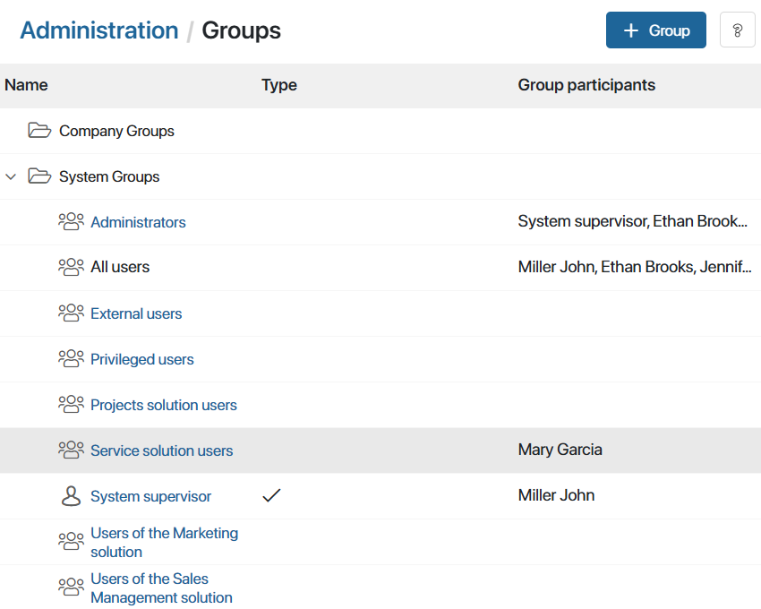

The following system groups are set by default in BRIX:
- Administrators. Users who have access to all system settings. The system supervisor is included in the group by default and can add other users to the group.
- External users. Users who are not company employees and have been given access to the system for working in the external portal.
- All users. By default, this group includes all users of the company. Please note that external users are not included in this group.
- Privileged users. The group includes users who use named licenses.
- System supervisor. By default, it includes the person who created the company.
- Solution user groups. Members of these groups can use specific system solutions, for example, BRIX Service or BRIX Projects.

System groups cannot be deleted. You can only add or delete their members.
System supervisor
The Supervisor has a full set of permissions that can be assigned in the system. For example, they can create, edit, and delete:
- Workspaces.
- Apps and app items.
- Widgets.
- Business processes, etc.
The Supervisor has access to all system settings, system folders and personal folders of users, can manage free storage space and the company's service plan, edit the list of users and channels, as well as model the organizational chart of the company.
Additionally, when BRIX fails to determine the executor of a business process task, such tasks are assigned to the Supervisor. This may happen, for example, if an employee specified in a swimlane no longer works in the company.
Please note that the System supervisor is not a group, but a role that is occupied by only one user.
Also, the Supervisor cannot be locked out of the system. Therefore, they must first assign another user to this role if, for example, they are quitting the job and leaving the company. To do this, edit the System supervisor role in the Administration > Groups workspace.
Administrators
The Administrator like the Supervisor has full access to all system objects. Unlike the supervisor, administrators do not receive business process tasks with undefined executors. Also, administrators cannot edit the Supervisor role and assign a different supervisor.
начало внимание
Users included in the Administrators group always have all the access permissions available in the system. Access restrictions are not applied to the supervisor or system administrators.
конец внимание
By default, the Administrators group includes only the Supervisor, who can add other users to the group.
External users
External users can access BRIX via the external portal interface. They are given limited access to the data stored in the system, can start business processes, create new app items, etc. To make such actions available, add corresponding buttons and widgets to the portal pages.
For an external user to sign into the portal, provide them with an invite link.
New external users can be added to the System apps workspace. To learn more, see Add external users.
This group is useful for setting access to system objects located on the portal page or for assigning an executor in a business process swimlane.
All users
The All users group includes all the users who have access BRIX. Just as for External users, you can use this group to configure access permissions to the system and assign executors in business processes.
Employees who are included in the All users group only cannot manage system settings and cannot open workspaces and apps with limited access.
An administrator can create a user group and add certain users to it, for example, to give them access to the restricted Invoices workspace.
Found a typo? Select it and press Ctrl+Enter to send us feedback